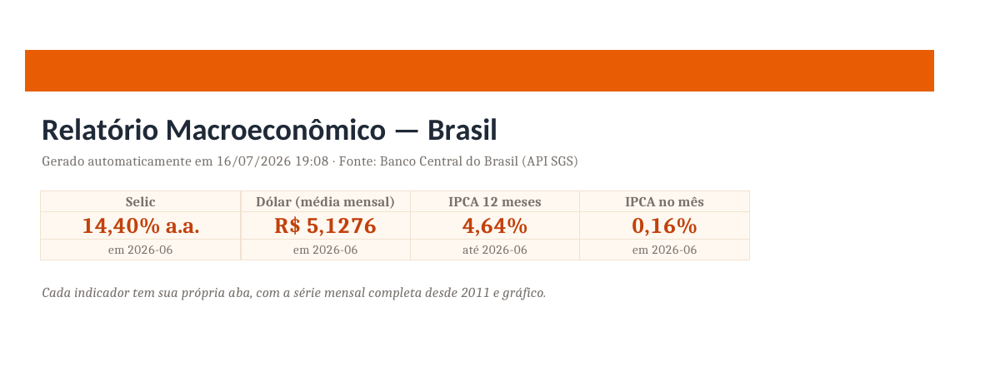

Um relatório Excel que se atualiza sozinho, todo mês
Script Python busca Selic, dólar e IPCA na API do Banco Central, monta um Excel formatado com capa, tabelas e gráficos — e o GitHub Actions roda tudo automaticamente. Zero cliques, zero copiar e colar.
0
Cliques por atualização — agendamento mensal via GitHub Actions
3
Indicadores oficiais: Selic, dólar (venda) e IPCA
558
Observações mensais tratadas (186 por série, desde 2011)
4 abas
Capa com destaques + 1 aba por indicador, com tabela zebrada e gráfico

Capa do Excel gerado pelo script — valores reais de jun/2026: Selic 14,40% a.a. · dólar R$ 5,13 · IPCA 4,64% em 12m
⬇ Baixar o Excel gerado
O problema que isso resolve
Toda empresa tem aquele relatório que alguém monta na mão, toda semana ou todo mês: baixa dados, cola na planilha, arruma formatação, envia. É trabalho repetitivo, sujeito a erro e caro. Este case mostra o mesmo fluxo 100% automatizado — do dado bruto ao arquivo final — usando só ferramentas gratuitas.
Como funciona
01ExtraçãoAPI SGS do Banco Central: Selic (4189), dólar (3698) e IPCA (433), sem chave.
02Cálculopandas: limpeza, tipos, IPCA acumulado 12 meses (juros compostos).
03Excelopenpyxl: capa com destaques, abas por indicador, tabelas zebradas e gráficos nativos.
04AgendamentoGitHub Actions roda o script todo mês e commita o Excel atualizado.
Ficha técnica
Quantas horas por mês sua equipe gasta montando relatório na mão?
Eu automatizo esse fluxo pra você. Primeira conversa sem compromisso.
Chamar no WhatsApp →